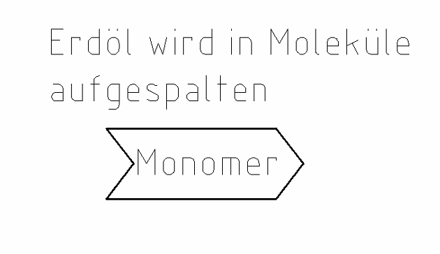
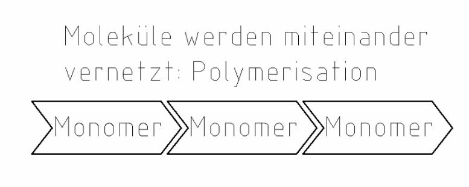
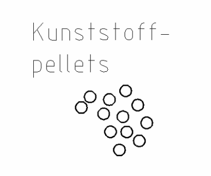
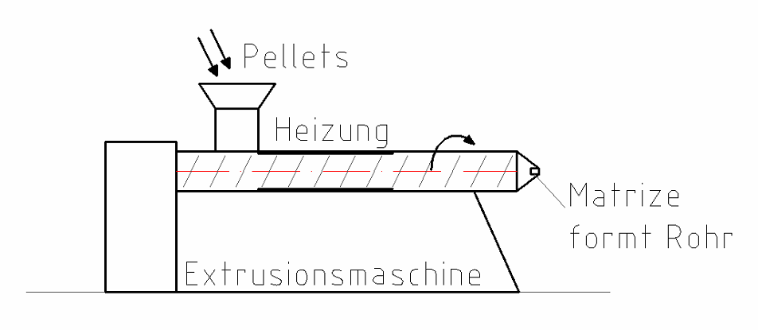

3 Kunststoff
Kunststoffrohre sind leicht und rosten nicht. Darum werden sie heute sehr oft verwendet.
So entsteht Kunststoff

1. Der Rohstoff ist das Erdöl.
2. Das Erdöl wird in kleine Teilchen aufgespalten. Diese Teilchen heißen Moleküle (oder Monomere).

3. Dann werden die Moleküle in einer bestimmten Reihenfolge wieder zusammengesetzt.
4. Das heißt Polymerisation.
Stell dir Perlen vor: Viele einzelne Perlen (Monomere) werden zu einer langen Kette (Polymer) aufgefädelt.
Drei Arten von Kunststoff
| Art | Eigenschaft | Beispiel |
|---|---|---|
| Thermoplaste | schweißbar | Folien |
| Duroplaste | spröde | Steckdose |
| Elastomere | elastisch | Gummiband |
Elastisch = lässt sich dehnen und geht wieder zurück. Spröde = bricht leicht.
Vorteile: geringes Gewicht, rostfrei
Nachteile: brennbar, verliert beim Wiederverwerten (Recycling) an Qualität
Kunststoffrohre

1. Kunststoffpellets (kleine Kunststoff-Körner) kommen in eine Extrusionsmaschine.

2. Eine Heizung macht die Pellets weich.
3. Eine Förderschnecke (die Schraube im Bild, wie bei einem Fleischwolf) drückt die weiche Masse durch eine Matrize.
4. Heraus kommt ein Rohr.
Verwendung von Kunststoffrohren:
- Heizung
- Kalt- und Warmwasser
- Abfluss
- Gas
Die Eigenschaften vom Kunststoff kann man genau an die Verwendung anpassen.
Tippe die richtige Antwort an. Dann tippe auf „Prüfen“.
Aufgabe 1
Vorteil oder Nachteil von Kunststoff?
a) geringes Gewicht
b) brennbar
c) rostfrei
d) verliert beim Recycling an Qualität
Aufgabe 2
Welche Kunststoffart ist das?
a) Ein Gummiband. Es ist elastisch.
b) Eine Folie. Sie ist schweißbar.
c) Eine Steckdose. Sie ist spröde.
Aufgabe 3
Lückentext Kunststoffherstellung. Tippe das Wort für ____ an.
1. Der Hauptrohstoff für Kunststoff ist das ____.
2. Es wird in seine einzelnen ____ aufgespalten.
3. Bei der ____ werden die Moleküle wieder zusammengebaut.
4. Thermoplaste sind ____.
5. Gummi gehört zu den ____.
6. Ein Vorteil ist das geringe ____.
7. Beim ____ verlieren Kunststoffe an Qualität.
Aufgabe 4
Lückentext Kunststoffrohre. Tippe das Wort für ____ an.
1. Kleine Kunststoff-Körner heißen Kunststoff-____.
2. Die Pellets kommen in eine ____.
3. Eine ____ drückt die weiche Masse durch eine Matrize.
4. Kunststoffrohre haben ein ____ Gewicht.
5. Man verwendet sie z. B. für ____.
6. Für das Schmutzwasser verwendet man sie als ____.